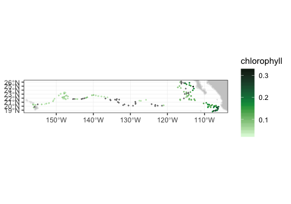
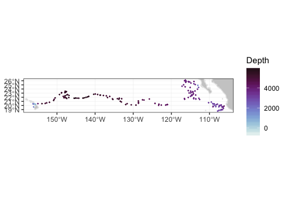
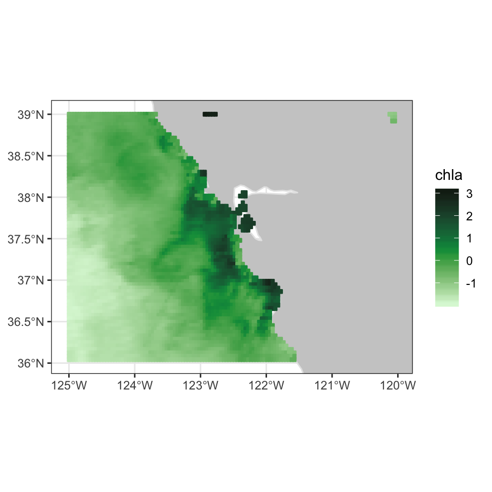
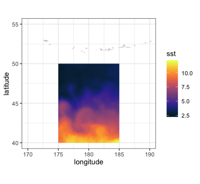
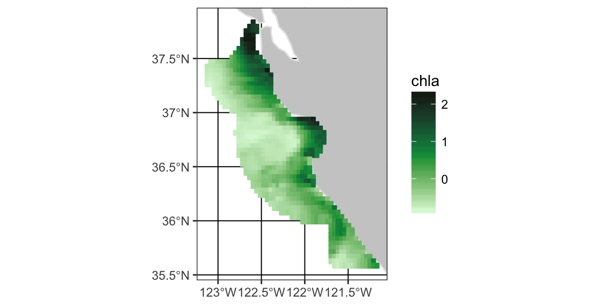
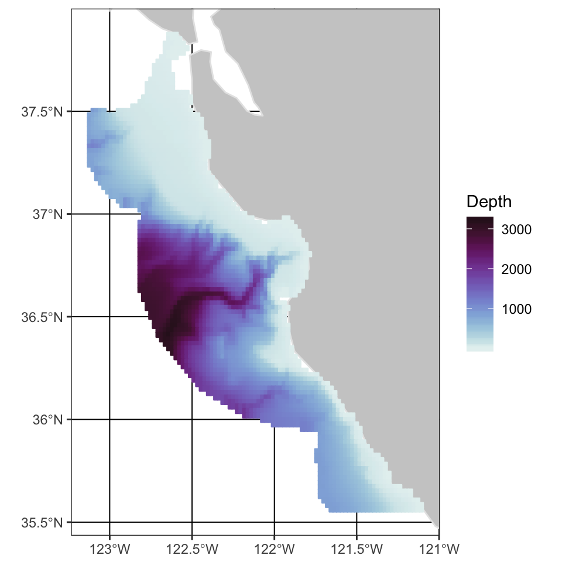
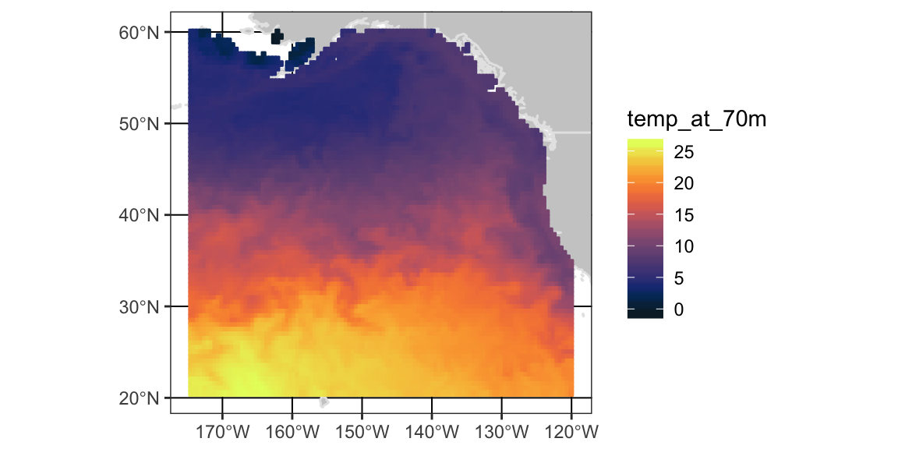
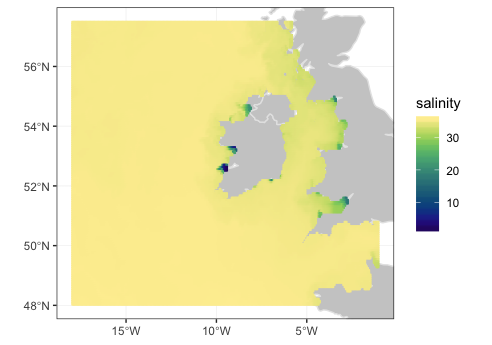
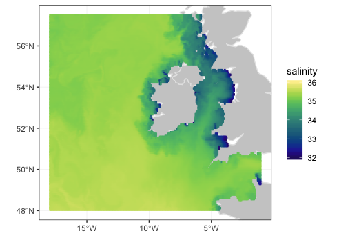
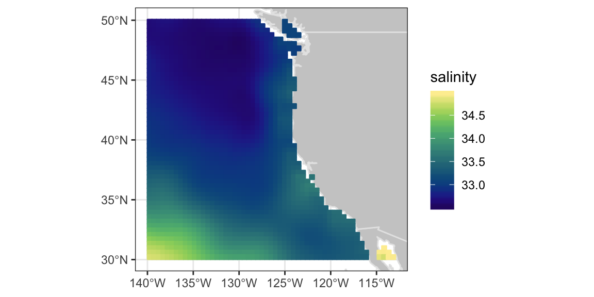

vignettes/UsingrerddapXtracto.Rmd
UsingrerddapXtracto.RmdrerddapXtracto is an R package developed to subset and extract satellite and other oceanographic related data from any ERDDAP server using the R package rerddap developed by Scott Chamberlain and the wonderful people at rOpenSci. ERDDAP is a simple to use yet powerful web data service developed by Bob Simons. rerddapXtracto extends the rerddap package by being able to extract data for a moving point in time along a user-supplied set of longitude, latitude and time points; and also extracting data within a polygon (through time). rerddapXtracto extends the functionality of the R package xtractomatic by being able to work with (hopefully) most gridded datasets available from any ERDDAP server. The disadvantage compared to xtractomatic is that the user has to do more work to obtain information about the dataset to be accessed, while in xtractomatic that information is built in.
This version has several major changes. In both rxtracto() and rxtracto_3D() the zcoord is not limited to be at a set location. That means for rxtracto_3D() that if the zCoord needs to be given for any reason, then it must be of length two, and for rxtracto() if the zCoord needs to be given for any reason, it must be of the same length as the other coordinates, and can also have a “zlen”“, like”xlen" and “ylen”, that defines a bounding box within which to make the extract. The advantage of this is it allows rxtracto() to make extracts moving in (x, y, z, t) space.
Second there are now two functions, plotTrack() for tracks and plotBBox() for grids, that produce quick maps of the output using the R package plotdap. All of the examples have been changed to use these functions. Bounding box extracts, as in rxtracto_3D(), can be done just using rerddap, but the rerddap function griddap() returns a “melted” version of the data, while rxtracto_3D() retains the grid structure. Also, rxtractogon() uses rxtracto_3D() and therefore plotBBox() can be used to plot the the results from rxtractogon(). These functions should also work with the output from the R package xtractomatic. For when more control of plot is desired several examples uses ggplot2 directly.
Third, it is now possible to make an extract that crosses the dateline for a dataset that is on a (-180, 180) longitude grid. This must be used with care, because some of the built-in checks are disabled for this case, and the requests must have longitudes on a (0, 360) longitude grid else errors will occur. This is particularly important for rxtracto() where the observed longitude point may not cross the dateline but the bounding box defined by “xlen” may cross it.
Finally, the plotting packages now allow for user defined continental outlines (important if crossing the dateline), a user defined crs, as well as animation.
There are three main data extraction functions in the rerddapXtracto package:
rxtracto <- function(dataInfo, parameter = NULL, xcoord = NULL, ycoord = NULL, zcoord = NULL, tcoord = NULL, xlen = 0., ylen = 0., zlen = 0., xName = 'longitude', yName = 'latitude', zName = 'altitude', tName = 'time', verbose = FALSE)
rxtracto_3D <- function(dataInfo, parameter = NULL, xcoord = NULL, ycoord = NULL, zcoord = NULL, tcoord = NULL, xName = 'longitude', yName = 'latitude', zName = 'altitude', tName = 'time', verbose = FALSE, cache_remove = TRUE)
rxtractogon <- function(dataInfo, parameter, xcoord = NULL, ycoord = NULL, zcoord = NULL, tcoord = NULL, xName = 'longitude', yName = 'latitude', zName = 'altitude', tName = 'time', verbose = FALSE)
and two functions for producing maps:
plotTrack <- function(resp, xcoord, ycoord, tcoord, plotColor = 'viridis', myFunc = NA, mapData = NULL, crs = NULL, animate = FALSE, cumulative = FALSE, name = NA, shape = 20, size = .5)
plotBBox <- function(resp, plotColor = 'viridis', time = NA, myFunc = NA, mapData = NULL, crs = NULL, animate = FALSE, cumulative = FALSE, name = NA, maxpixels = 10000)
The data extraction functions are similar to but not identical to the functions in xtractomatic. The main differences are having to obtain information about the dataset first using the function rerddap::info(), and possibly having to give the names of the coordinate variables, as these can’t be assumed (for example the zcoord could be in sigma coordinates). More specifically:
rerddap::info() call to a dataset on an ERDDAP serverWith all due respect to the Chambers Brothers, since any ERDDAP served gridded data can be accessed, a lot more care must be used with the values of “time” passed to rerddapXtracto as compared with xtractomatic. This is because datasets can have time increments of less than a day, an example of which is given below. ERDDAP maps all times to “Zulu” time, of the form “2016-11-01T00:00:00Z”. The date-time “2016-11-01” gets mapped to “2016-11-01T00:00:00Z”. When passing time limits of resolution finer than a day, be certain to take into account time offsets, and to pass the times in the form above. Times are parsed using the parse_date() function of the parsedate package, if in doubt you can use that function to see how the times you are passing will be interpreted.
rerddapXtracto uses the R packages ncdf4, parsedate, plotdap, rerddap, and sp, and these packages (and the packages imported by these packages) must be installed first or rerddapXtracto will fail to install.
install.packages("ncdf4", dependencies = TRUE)
install.packages("parsedate", dependencies = TRUE)
install.packages("plotdap", dependencies = TRUE)
install.packages("rerddap", dependencies = TRUE)
install.packages("sp", dependencies = TRUE)The rerddapXtracto package is available through CRAN and can be installed by:
The development version of the rerddapXtracto package is available from Github. To install the development version,
Note that plotdap depends on a number of packages that must be installed. These include the packages ggplot2, raster and sf. To use the animation features, gganimate must be installed.
If the other R libraries have been installed they will be found and do not need to be explicitly loaded.
The plotting functions are new, and there are some fine points that need to be understood if they are to be used properly, in particular plotBBox(). Both plotTrack() and plotBBox() rearrange the output so that the functions plotdap::add_tabledap() and plotdap::add_griddap() think that the output is from rerddap, and then make the appropriate plotdap call. When the data that are passed to add_griddap() has multiple time periods, there are two options. The first option is to set the parameter “time” to a function that reduces the data to one dimension in the time coordinate (such as the mean), or else to set “time” equal to “identity” and set “animate” to be “TRUE” which will produce a time animation of the results. If an animation is requested and the option “cumulative” is set to be “TRUE”, then the animation will be cumulative. This is a nice feature for displaying tracks through time. The function plotBBox() works the same way, except that the default function is mean(na.rm = TRUE). The following link to examples that show how to use different features of the plotting functions:
Setting the color palette shows how to use the “plotColor” option. The “plotColor” parameter can be the name of any of the colors included in the rerddap color palette. These colors are based on the cmocean colormaps designed by Kristen Thyng (see https://matplotlib.org/cmocean/ and https://github.com/matplotlib/cmocean), which were initially developed for Python, but a version of the colormaps is used in the oce package by Dan Kelley and Clark Richards and that is also what is used in rerddap.
Plot one time period example shows how to manipulate an existing output from rxtracto_3D() or rextractogon() to plot just one time period.
Transform the data example shows how to use the “myFunc” option to transform the data before plotting. The function has to be a function of a single argument. This example also shows how to use the “name” option to change the name displayed on the color bar. In this example, we want depth to go downwards in the colorbar, and the name given changed from “altitude”, which is the name on ERDDAP, to the name “Depth”.
Name example shows how to change the name on the colorbar.
Modify the graph shows how to use the plotdap function add_ggplot() to modify a graph once it has been generated.
Animate a track shows how to animate a track over time.
Animate a grid shows how to animate a grid with multiple time periods.
The first several examples reproduce some of the examples in the xtractomatic vignette, hopefully to make clear how the functions in the two packages relate. One change from the xtractomatic vignette is that the plots use the cmocean colormaps described above.
The first step is to find the necessary information from the ERDDAP server being used. These include the
In order for rerddapXtracto to have this information, as well as the coordinate variables and their limits, and the parameter names, a call must be made to the function rerddap::info() for the appropriate datasetID and baseURL:
require("rerddap")
## base URL does not need to given because it is the default one
dataInfo <- info('erdMBchla1day')
dataInfo
#> <ERDDAP info> erdMBchla1day
#> Base URL: https://upwell.pfeg.noaa.gov/erddap/
#> Dimensions (range):
#> time: (2006-01-01T12:00:00Z, 2019-08-30T12:00:00Z)
#> altitude: (0.0, 0.0)
#> latitude: (-45.0, 65.0)
#> longitude: (120.0, 320.0)
#> Variables:
#> chlorophyll:
#> Units: mg m-3rxtracto exampleIn this section we extract data along a trackline found in the Marlintag38606 dataset, which is the track of a tagged marlin in the Pacific Ocean (courtesy of Dr. Mike Musyl of the Pelagic Research Group LLC), and show some simple plots of the extracted data.
require("rerddap")
require("rerddapXtracto")
# First we will copy the Marlintag38606 data into a variable
# called tagData so that subsequent code will be more generic.
tagData <- Marlintag38606
xpos <- tagData$lon
ypos <- tagData$lat
tpos <- tagData$date
zpos <- rep(0., length(xpos))
swchlInfo <- rerddap::info('erdSWchla8day')
swchl1 <- rxtracto(swchlInfo, parameter = 'chlorophyll', xcoord = xpos, ycoord = ypos, tcoord = tpos, zcoord = zpos, xlen = .2, ylen = .2)Note the differences from the xtractomatic example.
rerddap::info('erdSWchla8day') to obtain information about that datasetWe plot the track line with the locations colored according to the mean of the satellite chlorophyll around that point. Positions where there was a tag location but no chlorophyll values are also shown. This example shows the use of the “plotColor” parameter to use the “chlorophyll” color palette.
require("ggplot2")
require("plotdap")
myPlot <- plotTrack(swchl1, xpos, ypos, tpos, plotColor = 'chlorophyll')
myPlot
To make a cumulative animation of the track:
myPlot <- plotTrack(swchl1, xpos, ypos, tpos, plotColor = 'chlorophyll',
animate = TRUE, cumulative = TRUE)marlin Track Animation
The second example from the xtractomatic vignette is accessing topographic data along the Marlin track. This example also shows how to pass a function to plotTrack to transform the data before plotting, how to change the name shown on the colorbar, and how to call plotTrack() if the dataset does not have a time coordinate.
require("ggplot2")
require("plotdap")
require("rerddap")
require("rerddapXtracto")
ylim <- c(15, 30)
xlim <- c(-160, -105)
topoInfo <- rerddap::info('etopo360')
topo <- rxtracto(topoInfo, parameter = 'altitude', xcoord = xpos, ycoord = ypos, xlen = .1, ylen = .1)
myFunc = function(x) -x
topoPlot <- plotTrack(topo, xpos, ypos, NA, plotColor = 'density', name = 'Depth', myFunc = myFunc)
topoPlot
Again, note the differences from the xtractomatic example:
rerddap::info('etopo360') to obtain information about that datasetxtractomatic.The following is an artificial example showing a track moving in (x, y, z, t) space. Since the times of the model output change, the actual times are retrieved, and the last three times used in the example.
require("rerddap")
urlBase <- "https://erddap.marine.ie/erddap/"
parameter <- "Sea_water_temperature"
dataInfo <- rerddap::info("IMI_CONN_3D", url = urlBase)
#get the actual last 3 times, and extract from data frame
dataInfo1 <- read.csv("https://erddap.marine.ie/erddap/griddap/IMI_CONN_3D.csv0?time[last-2:1:last]",stringsAsFactors = FALSE, header = FALSE, row.names = NULL)
sstTimes <- dataInfo1[[1]]
sstLats <- c(53.505758092414446, 53.509303546859805, 53.51284900130517)
sstLons <- c(-10.25975390624996, -10.247847656249961, -10.23594140624996)
sstDepths <- c(2, 6, 10)
sstTrack <- rxtracto(dataInfo, parameter = parameter, xcoord = sstLons, ycoord = sstLats, tcoord = sstTimes, zcoord = sstDepths, xlen = .05, ylen = .05, zlen = 0., zName = 'altitude')
#> Registered S3 methods overwritten by 'httr':
#> method from
#> as.character.form_file crul
#> print.cache_info hoardr
str(sstTrack)
#> List of 13
#> $ mean Sea_water_temperature : num [1:3] 12.8 14.3 15
#> $ stdev Sea_water_temperature : num [1:3] 0.516 0.456 0.131
#> $ n : int [1:3] 493 491 484
#> $ satellite date : chr [1:3] "2019-09-03T22:00:00Z" "2019-09-03T23:00:00Z" "2019-09-04T00:00:00Z"
#> $ requested lon min : num [1:3] -10.3 -10.3 -10.3
#> $ requested lon max : num [1:3] -10.2 -10.2 -10.2
#> $ requested lat min : num [1:3] 53.5 53.5 53.5
#> $ requested lat max : num [1:3] 53.5 53.5 53.5
#> $ requested z min : num [1:3] 2 6 10
#> $ requested z max : num [1:3] 2 6 10
#> $ requested date : chr [1:3] "2019-09-03T22:00:00Z" "2019-09-03T23:00:00Z" "2019-09-04T00:00:00Z"
#> $ median Sea_water_temperature: num [1:3] 12.7 14.4 15
#> $ mad Sea_water_temperature : num [1:3] 0.498 0.357 0.127
#> - attr(*, "row.names")= chr [1:3] "1" "2" "3"
#> - attr(*, "class")= chr [1:2] "list" "rxtractoTrack"The following is an artificial example of a track that crosses the date-line, using the MUR(Multi-scale Ultra-high Resolution) SST analysis:
dataInfo <- rerddap::info('jplMURSST41mday')
parameter <- 'sst'
xcoord <- c(179.7, 179.8, 179.9, 180., 180.1, 180.2, 180.3, 180.4)
ycoord <- c(40, 40, 40, 40, 40, 40, 40, 40)
tcoord <- c('2018-03-16', '2018-03-16', '2018-03-16','2018-03-16','2018-03-16','2018-03-16','2018-03-16','2018-03-16')
xlen <- .05
ylen <- .05
extract <- rxtracto(dataInfo, parameter = parameter, xcoord = xcoord,
ycoord = ycoord, tcoord = tcoord,
xlen = xlen, ylen = ylen)
str(extract)
#> List of 13
#> $ mean sst : num [1:8] 11.1 11.1 11.1 11.2 11.1 ...
#> $ stdev sst : num [1:8] 0.01328 0.00713 0.01025 0.01036 0.01446 ...
#> $ n : int [1:8] 30 35 35 30 30 30 35 35
#> $ satellite date : chr [1:8] "2018-03-16T00:00:00Z" "2018-03-16T00:00:00Z" "2018-03-16T00:00:00Z" "2018-03-16T00:00:00Z" ...
#> $ requested lon min: num [1:8] 180 180 180 180 180 ...
#> $ requested lon max: num [1:8] 180 180 180 180 180 ...
#> $ requested lat min: num [1:8] 40 40 40 40 40 ...
#> $ requested lat max: num [1:8] 40 40 40 40 40 ...
#> $ requested z min : logi [1:8] NA NA NA NA NA NA ...
#> $ requested z max : logi [1:8] NA NA NA NA NA NA ...
#> $ requested date : chr [1:8] "2018-03-16" "2018-03-16" "2018-03-16" "2018-03-16" ...
#> $ median sst : num [1:8] 11.1 11.1 11.1 11.2 11.1 ...
#> $ mad sst : num [1:8] 0.01627 0.00525 0.01149 0.01079 0.01744 ...
#> - attr(*, "row.names")= chr [1:8] "1" "2" "3" "4" ...
#> - attr(*, "class")= chr [1:2] "list" "rxtractoTrack"rxtracto_3D
The function rxtracto_3D() adds no new capabilities to rerddap, but it does return the data in a structure consistent with the xtractomatic function xtracto_3D(), is used in the function rxtractogon(), and provides a consistent parallel to the functions in the xtractomatic package. It also changes latitudes and longitudes to agree with those of the source dataset, and returns a structure where these are mapped back to the request.
We examine VIIRS chlorophyll for the “latest” data as of when the vignette was generated:
require("rerddap")
require("rerddapXtracto")
xpos <- c(-125, -120)
ypos <- c(39, 36)
tpos <- c("last", "last")
tpos <- c("2017-04-15", "2017-04-15")
VIIRSInfo <- rerddap::info('erdVH3chlamday')
VIIRS <- rxtracto_3D(VIIRSInfo, parameter = 'chla', xcoord = xpos, ycoord = ypos, tcoord = tpos)rxtracto_3d() returns a list of the form:
The coordinate names of the structure are based on the names given in the rxtracto_3d() call, so may differ between datasets. A similar call to rerddap::griddap() will either return the data “pre-melted” (that is long-form) or only get the netcdf file and have the user read in the data. There are trade-offs to having the data “pre-melted”, for consistency we maintain a structure similar to that in xtracto_3D(), plus this works even if the xcoord and ycoord are not longitude and latitude, where the “pre-melting” in rerddap::griddap() fails.
We can map the data using plotBBox():
require("ggplot2")
#> Loading required package: ggplot2
require("plotdap")
myFunc <- function(x) log(x)
chlalogPlot <- plotBBox(VIIRS, plotColor = 'chlorophyll', myFunc = myFunc)
chlalogPlot
The following is an rxtracto_3D() request that again uses the MUR dataset and crosses the date-line:
To make plots that cross the date-line, is is necessary to use the ‘world2’ continental outlines rather than the default. Due to some problems with that dataset, some regions must be removed in order to not get artificial lines.
xlim <- c(170, 190)
ylim <- c(40, 55)
remove <- c("UK:Great Britain", "France", "Spain", "Algeria", "Mali", "Burkina Faso", "Ghana", "Togo")
w <- map("world2Hires", xlim = xlim, ylim = ylim, fill = TRUE, plot = FALSE)
w <- map("mapdata::world2Hires", regions = w$names[!(w$names %in% remove)], plot = FALSE, fill = TRUE, ylim = ylim, xlim = xlim)At present plotBBox() can plot across the date-line, but the x-axis labels get mixed up. Instead, the data can be plotted using ggplot2. A function mapFrame() is defined to help melt the data into a dataframe suitable for ggplot2, and then plotted using the outline defined above.
mapFrame <- function(longitude, latitude, my_data) {
my_data_name <- names(my_data)
temp_data <- drop(my_data[[1]])
dims <- dim(temp_data)
temp_data <- array(temp_data, dims[1] * dims[2])
my_frame <- expand.grid(x = longitude, y = latitude)
my_frame[my_data_name] <- temp_data
return(my_frame)
}
mur_frame <- mapFrame(mur_dateline$longitude, mur_dateline$latitude, mur_dateline['sst'])
mycolor <- cmocean$thermal
myplot <- ggplot(data = mur_frame, aes(x = x, y = y, fill = sst)) +
geom_polygon(data = w, aes(x = long, y = lat, group = group), fill = "grey80") + geom_raster(interpolate = FALSE) +
scale_fill_gradientn(colours = mycolor, na.value = NA) +
theme_bw() + ylab("latitude") + xlab("longitude") +
coord_fixed(1.3, xlim = xlim, ylim = ylim)
myplot
rxtractogon
The function rxtractogon() extracts a time-series of satellite data that are within a user supplied polygon. We repeat here two of the examples in the xtractomatic vignette. The first gets chlorophyll within the boundary points of the Monterey Bay National Marine Sanctuary, which are available in the mbnms dataset which are loaded with the rerddapXtracto package.
require("rerddapXtracto")
dataInfo <- rerddap::info('erdVH3chlamday')
parameter = 'chla'
tpos <- c("2014-09-01", "2014-10-01")
#tpos <-as.Date(tpos)
xpos <- mbnms$Longitude
ypos <- mbnms$Latitude
sanctchl <- rxtractogon(dataInfo, parameter = parameter, xcoord = xpos, ycoord = ypos, tcoord = tpos)
str(sanctchl)
#> List of 6
#> $ chla : num [1:50, 1:57, 1:2] NA NA NA NA NA NA NA NA NA NA ...
#> $ datasetname: chr "erdVH3chlamday"
#> $ longitude : num [1:50(1d)] -123 -123 -123 -123 -123 ...
#> $ latitude : num [1:57(1d)] 35.6 35.6 35.6 35.7 35.7 ...
#> $ altitude : logi NA
#> $ time : POSIXlt[1:2], format: "2014-09-15" "2014-10-15"
#> - attr(*, "class")= chr [1:2] "list" "rxtracto3D"The extract (see str(sanctchl)) contains two time periods of chlorophyll masked for data only in the sanctuary boundaries. This example shows how to pull out only a single time period to be used in plotBBox().
require("ggplot2")
require("plotdap")
myFunc <- function(x) log(x)
sanctchl1 <- sanctchl
sanctchl1$chla <- sanctchl1$chla[, , 2]
sanctchl1$time <- sanctchl1$time[2]
sanctchlPlot <- plotBBox(sanctchl1, plotColor = 'chlorophyll', myFunc = myFunc)
sanctchlPlot
This extract can be used to show the ability to animate the output through time:
require("gganimate")
#> Loading required package: gganimate
require("ggplot2")
require("plotdap")
myFunc <- function(x) log(x)
sanctchlPlot <- plotBBox(sanctchl, plotColor = 'chlorophyll', myFunc = myFunc, time = identity, animate = TRUE)Sanctuary Animation
The MBNMS is famous for containing the Monterey Canyon, which reaches depths of up to 3,600 m (11,800 ft) below surface level at its deepest. rxtractogon() can extract the bathymetry data for the MBNMS from the ETOPO dataset:
require("rerddap")
dataInfo <- rerddap::info('etopo180')
xpos <- mbnms$Longitude
ypos <- mbnms$Latitude
bathy <- rxtractogon(dataInfo, parameter = 'altitude', xcoord = xpos, ycoord = ypos)
str(bathy)
#> List of 6
#> $ depth : num [1:123, 1:141, 1] NA NA NA NA NA NA NA NA NA NA ...
#> $ datasetname: chr "etopo180"
#> $ longitude : num [1:123(1d)] -123 -123 -123 -123 -123 ...
#> $ latitude : num [1:141(1d)] 35.5 35.6 35.6 35.6 35.6 ...
#> $ altitude : logi NA
#> $ time : logi NA
#> - attr(*, "class")= chr [1:2] "list" "rxtracto3D"Mapping the data to show the canyon:
require("ggplot2")
require("mapdata")
myFunc = function(x) -x
bathyPlot <- suppressMessages((plotBBox(bathy, plotColor = 'density', myFunc = myFunc, name = 'Depth')))
bathyPlot
This is an example of an extract from a 4-D dataset (results from the “Simple Ocean Data Assimilation (SODA)” model), and illustrate the case where the z-coordinate does not have the default name “altitude”. Water temperature at 70m depth is extracted for the North Pacific Ocean east of the dateline.
require("rerddap")
dataInfo <- rerddap::info('erdSoda331oceanmday')
xpos <- c(185.25, 240.25)
ypos <- c(20.25, 60.25)
zpos <- c(76.80285, 76.80285)
tpos <- c('2010-12-15', '2010-12-15')
soda70 <- rxtracto_3D(dataInfo, parameter = 'temp', xcoord = xpos, ycoord = ypos, tcoord = tpos, zcoord = zpos, zName = 'depth')
str(soda70)
#> List of 6
#> $ temp : num [1:111, 1:81, 1, 1] 25.4 25.3 25.3 25.5 25.3 ...
#> $ datasetname: chr "erdSoda331oceanmday"
#> $ longitude : num [1:111(1d)] 185 186 186 187 187 ...
#> $ latitude : num [1:81(1d)] 20.2 20.8 21.2 21.8 22.2 ...
#> $ depth : num [1(1d)] 76.8
#> $ time : POSIXlt[1:1], format: "2010-12-16"
#> - attr(*, "class")= chr [1:2] "list" "rxtracto3D"require("ggplot2")
require("plotdap")
sodaPlot <- plotBBox(soda70, plotColor = 'temperature', name = 'temp_at_70m', maxpixels = 30000)
sodaPlot
The Irish Marine Institute has an ERDDAP server at https://erddap.marine.ie/erddap. Among other datasets, there is hourly output from a model of the North Atlantic ocean, with a variety of ocean related parameters, see https://erddap.marine.ie/erddap/griddap/IMI_NEATL.html. To obtain sea surface salinity at latest time available for the domain of the model:
require("rerddap")
urlBase <- "https://erddap.marine.ie/erddap/"
parameter <- "sea_surface_salinity"
sssTimes <- c("last", "last")
sssLats <- c(48.00625, 57.50625)
sssLons <- c(-17.99375, -1.00625)
dataInfo <- rerddap::info("IMI_NEATL", url = urlBase)
NAtlSSS <- rxtracto_3D(dataInfo, parameter = parameter, xcoord = sssLons, ycoord = sssLats, tcoord = sssTimes)require("ggplot2")
require("plotdap")
NAtlSSSPlot <- plotBBox(NAtlSSS, plotColor = 'salinity', name = "salinity", maxpixels = 30000)
NAtlSSSPlot
A lot of the details in the ocean are hidden in the plot above, because there are some low salinity values right close to shore. The plot can be modified using the plotdap function add_ggplot() so that only values between (32, 36) are plotted, and to change the colorbar to reflect this.
require("ggplot2")
require("plotdap")
add_ggplot(NAtlSSSPlot, scale_colour_gradientn(colours = cmocean$haline, na.value = NA, limits = c(32, 36)), scale_fill_gradientn(colours = cmocean$haline, na.value = NA, limits = c(32, 36)))
The French agency IFREMER also has an ERDDAP server. We obtain salinity data at 75 meters from the Global Ocean, Coriolis Observation Re-Analysis CORA4.1 model off the west coast of the United States.
require("rerddap")
urlBase <- "https://www.ifremer.fr/erddap/"
parameter <- "PSAL"
ifrTimes <- c("2013-09-15", "2013-09-15")
ifrLats <- c(30., 50.)
ifrLons <- c(-140., -110.)
ifrDepth <- c(75., 75.)
dataInfo <- rerddap::info("NRTOA", url = urlBase)
ifrPSAL <- rxtracto_3D(dataInfo, parameter = parameter, xcoord = ifrLons, ycoord = ifrLats, tcoord = ifrTimes, zcoord = ifrDepth, zName = 'depth')
str(ifrPSAL)
#> List of 6
#> $ PSAL : num [1:61, 1:54, 1, 1] 34.8 34.8 34.8 34.7 34.7 ...
#> $ datasetname: chr "NRTOA"
#> $ longitude : num [1:61(1d)] -140 -140 -139 -138 -138 ...
#> $ latitude : num [1:54(1d)] 30 30.5 30.9 31.3 31.7 ...
#> $ depth : num [1(1d)] 75
#> $ time : POSIXlt[1:1], format: "2013-09-15"
#> - attr(*, "class")= chr [1:2] "list" "rxtracto3D"Plotting the results using plotBBox():
require("ggplot2")
require("plotdap")
ifrPSALPlot <- plotBBox(ifrPSAL, plotColor = 'salinity', name = "salinity", maxpixels = 30000)
print(ifrPSALPlot)
When you make an rerddapXtracto request, particularly for track data using the function rxtracto() , it is important to understand what is extracted, because the remote dataset requested likely will have a different temporal and spatial resolution then the local dataset.
Specifically, let longitude, latitude and time be the coordinate system of the remote ERDDAP dataset, and let xpos, ypos and tpos be the bounds of a request. Then the ERDDAP request is based on the nearest grid point of the ERDDAP dataset:
latitude[which.min(abs(latitude - ypos[1]))] # minimum latitude
latitude[which.min(abs(latitude - ypos[2]))] # maximum latitude
longitude[which.min(abs(longitude- xpos[1]))] # minimum longitude
longitude[which.min(abs(longitude - xpos[2]))] # maximum longitude
isotime[which.min(abs(time - tpos[1]))] # minimum time
isotime[which.min(abs(time - tpos[2]))] # maximum timewhere tpos and time have been converted to an R date format so that it is a number rather than a string. For example, the FNMOC 6-hourly Ekman transports are on a 1-degree grid. A request for the data at a longitude of 220.2 and a latitude of 38.7 will return the result at a longitude of 220 and a latitude of 39. These values are then used in a call to rerddap::griddap(), with parameter being the variable of interest.
rerddap caches requests as it’s default behavior. For the function rxtracto(), as a lot of files are downloaded, these are removed from the cache after each download. For the functions rxtracto_3D() and rxtratogon() after downloading and putting the data into a dataframe, the downloaded netCDF file is copied from the cache to the present working directory, and renamed based on the parameter name, and the cached file is removed.